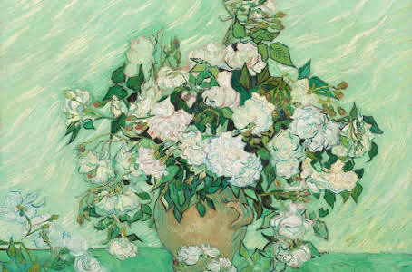
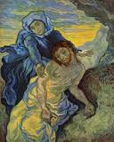
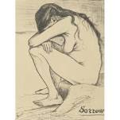
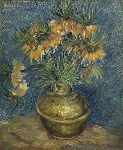

Starry night


Van Gogh nació en 1853 y creció en Holanda. Fue criado en una familia religiosa con su padre siendo un ministro. Cuando terminó sus estudios, Vincent siguió la profesión de su tío y se convirtió en un comerciante de arte aprendiendo el comercio en Holanda y luego trabajando en Inglaterra y Francia. Vincent tuvo éxito e inicialmente fue contento con su trabajo. Sin embargo, pronto se cansó de la empresa de arte, especialmente en París, y perdió interés en el comercio. Después de regresar a casa, Vincent comenzó estudiar teología. Si bien muy apasionado y entusiastico, él falló los exámenes para entrar en un par de programas. Característico de su personalidad, era inteligente, capaz de hablar varios idiomas, pero él no creía que el latín era una lengua para predicar a los pobres. Durante este período, trabajó como misionero en una comunidad minera de carbon viviendo con los pobres trabajadores gente comúnes. A medida que su desarrollo como un predicador estaba estancando, su interés a aquellos alrededor de él aumentaba. Su vida como artista comenzaba.
En 1880, a 27 años de edad, Van Gogh entró en el Académie Royale des Beaux-Arts en Bruselas, Bélgica. El invierno siguiente, viviendo en Amsterdam, Vincent se enamoró, su corazón se había roto, y comenzó a pintar. Los próximos años se traduciría en poco éxito tanto en el amor y el arte.
Starry night |
Naturaleza muerta |
Pietà |
Dolor |
Corona imperial en un jarón de cobre |